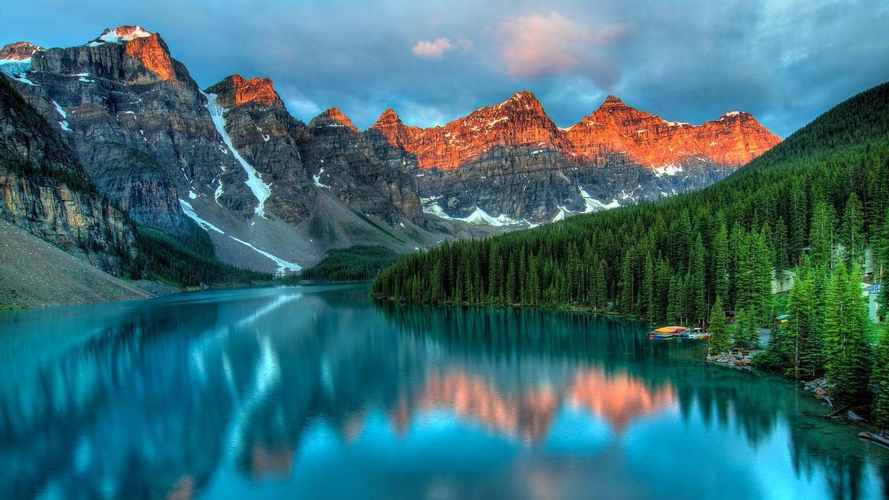
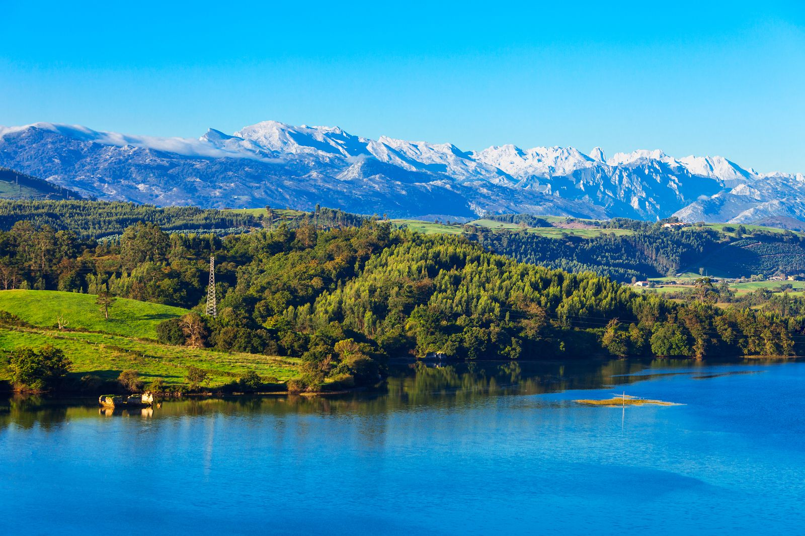
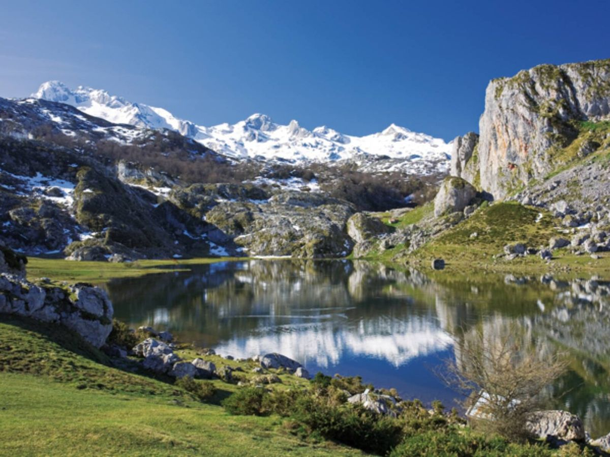
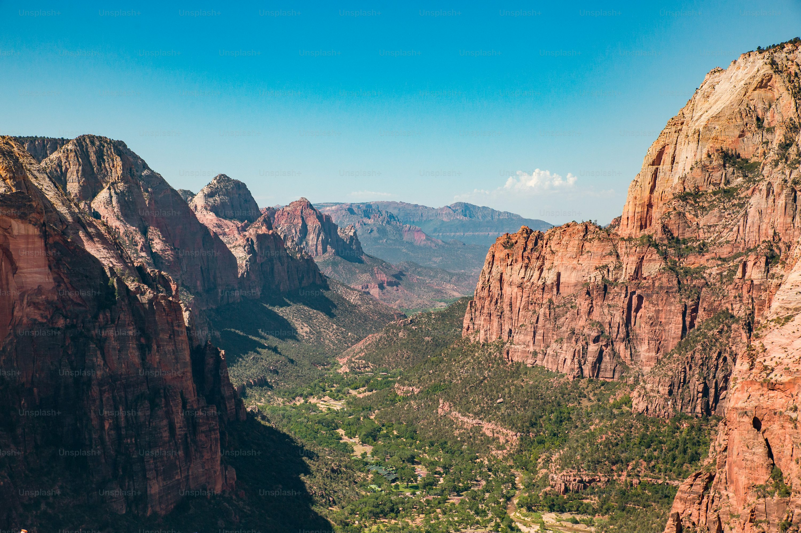
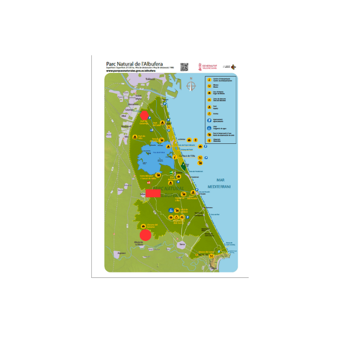

Lago Morayne
Lago Ercina
Sierra Nevada

Vista panorámica del Lago Moraine en las Montañas Rocosas.

Vista Sierra Nevada en diciembre.

Vista Sierra Nevada en diciembre.
Enlaces de Interes:
Página oficial de excursiones
Wikipedia - Parques Nacionales
WWF - Bosques y Conservación
National Geographic - Parques y Conservación
IUCN - Áreas Protegidas


Mapa Parque